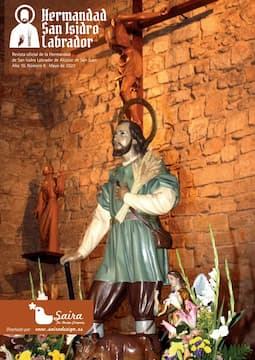

La HermandadEn esta página podrás encontrar toda la información relativa a la Hermandad de San Isidro Labrador de Alcázar de San Juan y las noticias relacionadas con ella.
HISTORIA DE NUESTRA HERMANDAD
La Hermandad de San Isidro Labrador, es fundada allá por el año 1942, por labradores y ganaderos locales, siendo donada la imagen del Santo a la Hermandad por Don Antonio Castellanos Arias. Un par de años más tarde, en 1944 se construye la ermita que lleva su nombre. El terreno sobre el que se asentó la ermita, pertenecía a la familia Castellanos Coca, y fue ... 
ENTREVISTA AL PRESIDENTE DE NUESTRA HERMANDAD
Este primer número de la revista que la Hermandad de San Isidro ha decido publicar con carácter, al menos anual, cuenta en esa ocasión con una pequeña entrevista al Presidentede la Hermandad, como no podía ser de otro modo, el Sr. Don Julio Romero Romero. Ha sido muy amable con nosotros, y le agradecemos el tiempo que nos ha dedicado. Aquí dejamos la entrevista que ...
SALUDA DEL PRESIDENTE DE NUESTRA HERMANDAD. Revista 2016
Treinta años ya en esta Hermandad de San Isidro… y parece que fue ayer… Y así, año tras año, volvemos a preparar con el mismo ánimo, con las mismas ganas, con la misma ilusión, la fiesta de nuestro queridísimo patrono.
|
 Revista San Isidro 2023 |
| Teléfono: 654 53 82 29 (Jesús) Casa Parroquial de la Iglesia de San Francisco Plaza de San Francisco, s/n 13600 - Alcázar de San Juan (Ciudad Real) |
Síguenos en |